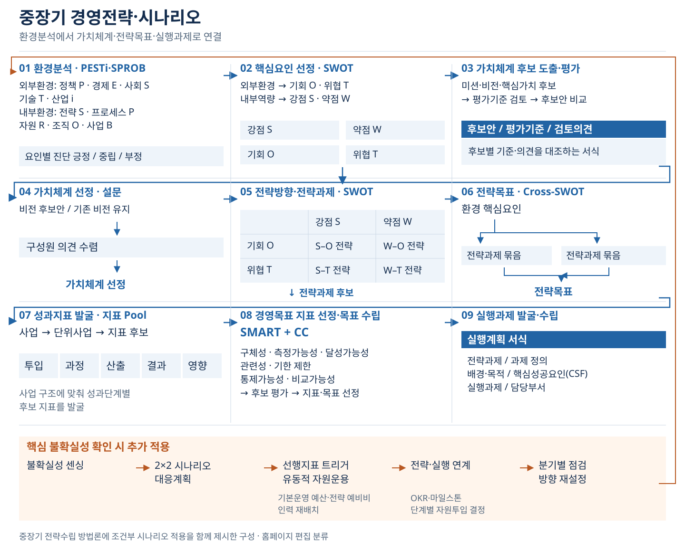
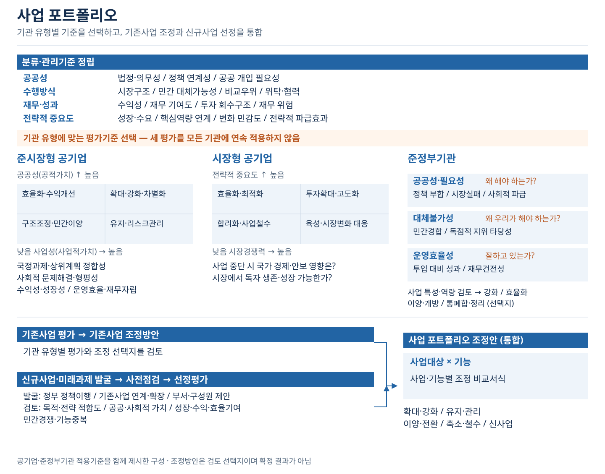
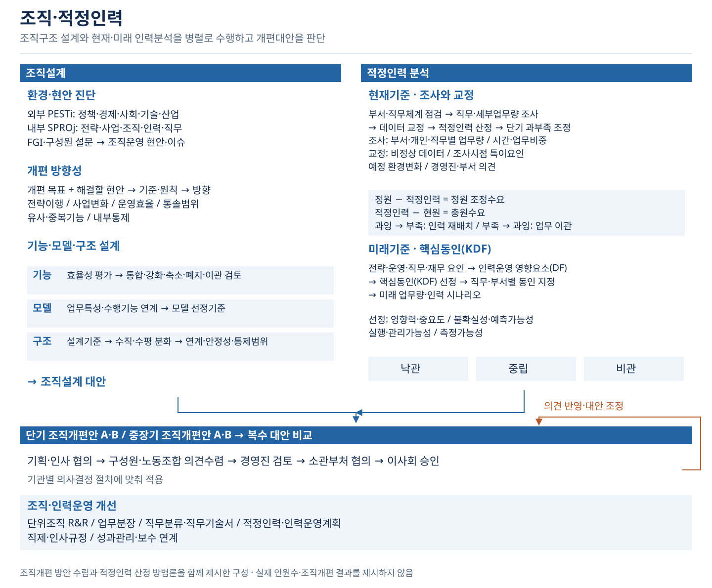
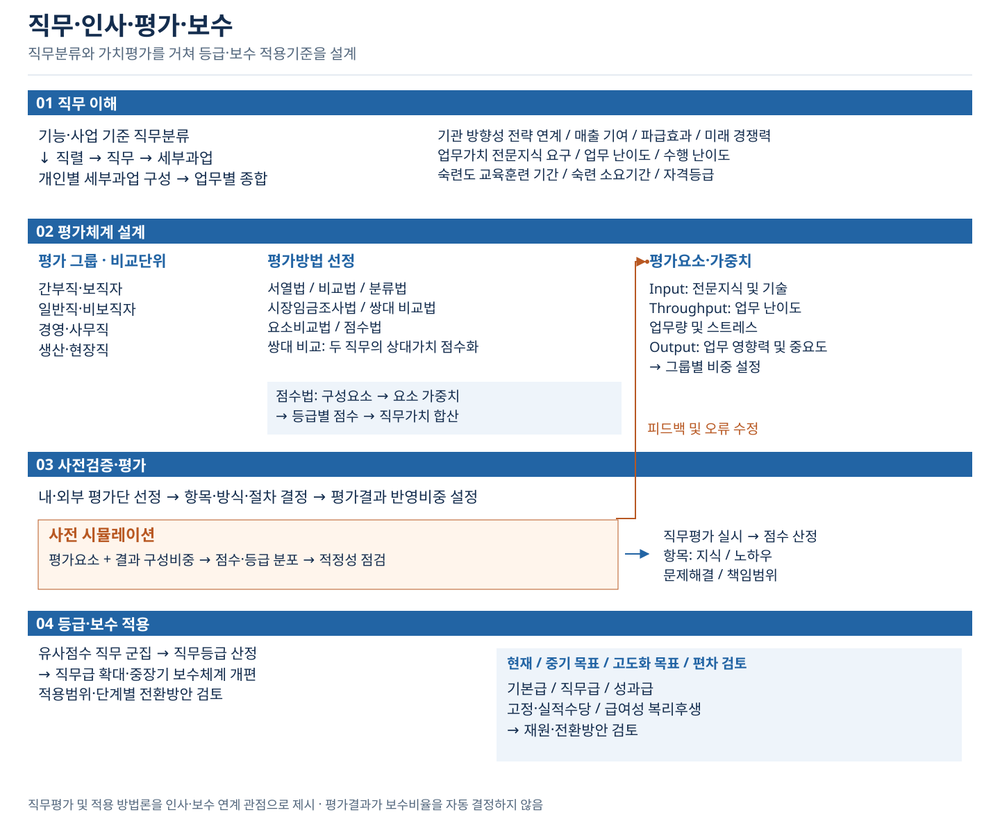
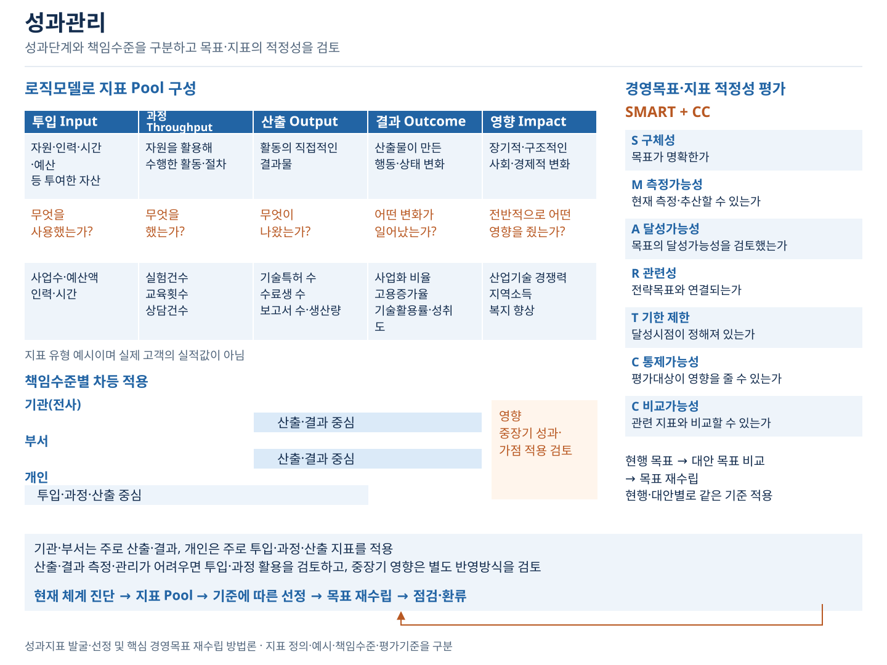
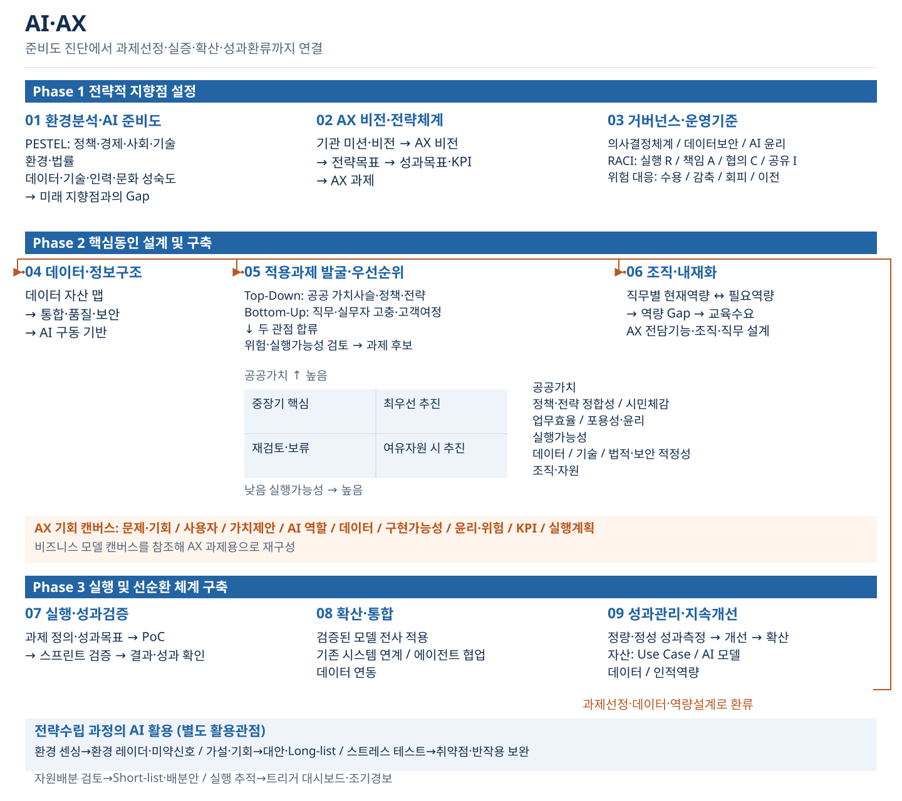

01
과제와 범위 확인
- 함께 확인할 자료와 상황
- 추진 배경, 요구사항, 일정과 보유 자료를 확인합니다.
- 함께 결정할 내용
- 이번 과업이 답할 질문과 분석 범위
- 결과물 예시
- 과업 범위, 자료 목록, 검토 일정
HOW WE WORK
기관 자료와 현장 의견을 대조해 문제의 원인을 짚습니다. 대안의 효과·부담·시행 조건을 비교하고, 사업·조직·제도에 반영할 계획을 함께 정합니다.
기관과 함께하는 수행과정
분석 방법과 최종 산출물은 과업 조건과 계약에 맞춰 정합니다. 적용·점검 지원은 합의한 범위에서 수행합니다.
과제별 분석·설계
홈페이지에서 과제를 찾기 쉽도록 묶은 여섯 영역입니다. 그림과 함께 분석의 목적·자료·흐름·결과물 예시를 확인할 수 있습니다. 기법과 적용 범위는 과업별로 협의합니다.
과제별 분석·설계
환경이 바뀌어도 유효한 전략을 어떻게 수립합니까?

중장기 전략·시나리오 · 도식 크게 보기 ↗기관의 목적과 환경을 미래 방향·목표·실행과제로 연결하고 불확실성에 따라 전략을 조정합니다.
설립목적과 기관 역할, 기존 경영전략과 성과지표, 내·외부 환경자료, 구성원 의견을 확인합니다.
기관의 목적과 계획기간에 맞춰 분석합니다. 시나리오와 분기 점검은 불확실성과 필요한 자료를 확인해 적용 범위를 정합니다.
| 구분 | 분석 항목 | 진단 관점 |
|---|---|---|
| 외부환경 · PESTi | 정책 P · 경제 E · 사회 S · 기술 T · 산업 i | 요인별 긍정·중립·부정 |
| 내부환경 · SPROB | 전략 S · 프로세스 P · 자원 R · 조직 O · 사업 B | 요인별 긍정·중립·부정 |
환경요인을 살핀 뒤 핵심요인을 선정합니다. 기관의 실제 진단 결과는 자료 확인 후 제시합니다.
| 분석 기반 | 도출할 요인 |
|---|---|
| 외부환경 | 기회 O · 위협 T |
| 내부역량 | 강점 S · 약점 W |
네 요인 묶음을 전략방향·전략과제 도출에 연결합니다.
미션·비전·핵심가치 후보를 도출하고 평가기준을 검토해 후보안을 비교합니다.
| 후보안 | 평가기준 | 검토의견 |
|---|---|---|
| 미션·비전·핵심가치 후보 | 기관의 목적과 방향에 맞는 기준 검토 | 후보별 적합성과 조정 사항 비교 |
후보안 평가와 구성원 설문은 서로 다른 검토 단계입니다.
| 외부요인 / 내부요인 | 강점 S | 약점 W |
|---|---|---|
| 기회 O | S–O 전략 | W–O 전략 |
| 위협 T | S–T 전략 | W–T 전략 |
교차전략에서 전략과제 후보를 도출합니다.
환경 핵심요인 → 전략과제 묶음 → 전략목표의 대응관계를 검토합니다. 핵심요인·과제·목표를 같은 단계로 취급하지 않고 각 목표가 어떤 분석과 과제에 연결되는지 확인합니다.
사업 → 단위사업 → 지표 후보로 구체화합니다. 지표 후보를 투입·과정·산출·결과·영향의 성과 단계로 구분해 검토합니다.
SMART + 통제가능성·비교가능성을 같은 기준으로 적용해 지표 후보를 평가하고 목표를 정합니다.
| 기준 | 검토 질문 |
|---|---|
| S · 구체성 | 목표가 명확한가 |
| M · 측정가능성 | 현재 측정·추산할 수 있는가 |
| A · 달성가능성 | 목표의 달성가능성을 검토했는가 |
| R · 관련성 | 전략목표와 연결되는가 |
| T · 기한 제한 | 달성시점이 정해져 있는가 |
| C · 통제가능성 | 평가대상이 영향을 줄 수 있는가 |
| C · 비교가능성 | 관련 지표와 비교할 수 있는가 |
| 실행계획 항목 | 함께 정리할 내용 |
|---|---|
| 전략과제 | 추진할 전략과제 |
| 과제 정의 | 과제의 범위와 내용 |
| 배경·목적 | 과제의 선정 배경과 목적 |
| 핵심성공요인 · CSF | 과제의 성공에 필요한 조건 |
| 실행과제 | 구체적으로 수행할 단위과업 |
| 담당부서 | 추진 역할과 책임 |
기본운영 예산과 전략 예비비, 인력 재배치를 검토하고 OKR·마일스톤·단계별 자원투입 결정으로 실행과 연결합니다. 시나리오는 중장기 전략수립에 조건부로 더하는 별도의 검토입니다.
과제별 분석·설계
어떤 사업을 강화하고, 무엇을 조정해야 합니까?

사업 포트폴리오 · 도식 크게 보기 ↗기존 사업과 미래 사업을 공공성·사업특성에 맞는 기준으로 평가해 포트폴리오를 조정합니다.
사업별 목적과 법적 근거, 수혜 대상, 예산·수입·성과, 시장과 정책의 변화, 신규사업 수요를 확인합니다.
기관 유형과 사업 특성에 따라 기준을 구분합니다. 시장형 공기업은 전략적 중요도·시장경쟁력, 준시장형은 공공성·사업성, 준정부기관은 공공수행 필요성·비대체성·운영효율성을 검토합니다.
| 관점 | 검토 항목 |
|---|---|
| 공공성 | 법정·의무성, 정책 연계성, 공공 개입 필요성 |
| 수행방식 | 시장구조, 민간 대체가능성, 비교우위, 위탁·협력 가능성 |
| 재무·성과 | 수익성, 재무 기여도, 투자 회수구조, 재무 위험 |
| 전략적 중요도 | 성장·수요 전망, 핵심역량 연계, 변화 민감도, 전략적 파급효과 |
공공성(공적가치)을 세로축, 사업성(사업적가치)을 가로축으로 검토합니다. 국정과제·상위계획 정합성, 사회적 문제해결·형평성, 수익성·성장성, 운영효율·재무자립을 살핍니다.
| 공공성 / 사업성 | 낮음 | 높음 |
|---|---|---|
| 높음 | 효율화·수익개선 | 확대·강화·차별화 |
| 낮음 | 구조조정·민간이양 | 유지·리스크관리 |
전략적 중요도를 세로축, 시장경쟁력을 가로축으로 검토합니다. 사업 중단이 국가 경제·안보에 미치는 영향과 시장에서의 독자 생존·지속성장 가능성을 함께 질문합니다.
| 전략적 중요도 / 시장경쟁력 | 낮음 | 높음 |
|---|---|---|
| 높음 | 효율화·최적화 | 투자확대·고도화 |
| 낮음 | 합리화·사업철수 | 육성·시장변화 대응 |
| 기준 | 핵심 질문 | 검토 항목 |
|---|---|---|
| 공공성·필요성 | 왜 해야 하는가? | 정책 부합성·시장실패 보완·사회적 파급효과 |
| 대체불가성 | 왜 우리가 해야 하는가? | 민간경합·독점적 지위 타당성 |
| 운영효율성 | 잘하고 있는가? | 투입 대비 성과·재무건전성 |
사업 특성과 수행역량을 함께 검토해 핵심기능 강화, 혁신·효율화, 이양·개방, 통폐합·사업정리 등의 선택지를 비교합니다. 기관 유형에 맞는 기준을 선택하며 세 평가를 모든 기관에 연속 적용하지 않습니다.
| 검토 갈래 | 분석 흐름 |
|---|---|
| 기존사업 | 기존사업 평가 → 기존사업 조정방안 |
| 신규사업·미래과제 | 발굴 → 사전점검 → 선정평가 |
| 통합 | 두 갈래의 결과 → 사업 포트폴리오 조정안 |
신규사업은 정부 정책이행 사업, 기존사업의 연계·확장, 부서·구성원 제안에서 찾습니다.
| 신규사업 검토 관점 | 항목 |
|---|---|
| 목적·전략 | 목적적합성·전략적 적합도 |
| 공공가치 | 공공가치·사회적 가치 |
| 사업적 기여 | 성장성·수익기여·효율기여 |
| 중복·경쟁 | 민간경쟁·기능중복 |
통합 조정안은 사업대상 × 기능으로 대조하고 확대·강화 / 유지·관리 / 이양·전환 / 축소·철수 / 신사업의 방향을 검토합니다. 조정방안은 분석 후 결정할 선택지입니다.
과제별 분석·설계
전략과 업무량에 맞는 조직·인력은 어느 수준입니까?

조직·적정인력 · 도식 크게 보기 ↗기관의 전략과 업무 변화에 맞춰 조직구조와 단기·중장기 인력운영을 함께 설계합니다.
기관 전략과 사업계획, 조직별 기능·권한·인력 현황, 직무·세부업무, 업무량과 수행시간 자료를 확인합니다.
조직설계와 인력 산정을 함께 검토하되 결과를 혼용하지 않습니다. 필요한 자료, 시간·업무량 기준, 가정과 시나리오를 정한 뒤 산정하고 기관의 정원·제도·의사결정 조건을 반영합니다.
| 구분 | 분석 항목 |
|---|---|
| 외부 · PESTi | 정책·경제·사회·기술·산업 |
| 내부 · SPROj | 전략·사업·조직·인력·직무 |
| 현장 의견 | 주요인력 인터뷰(FGI)·구성원 설문 |
환경과 현장 의견을 대조해 조직운영의 현안·이슈를 도출합니다.
개편 목표와 해결할 현안 → 조직개편 기준·원칙 → 개편 방향으로 연결합니다.
| 설계 영역 | 분석과 대안 |
|---|---|
| 기능 | 효율성 평가 → 통합·강화·축소·폐지·이관 검토 |
| 모델 | 업무특성·수행기능 연계 → 조직모델 선정기준 |
| 구조 | 설계기준 → 수직·수평 분화 → 업무 연계·안정성·통제범위 |
세 영역의 검토를 조직설계 대안으로 모읍니다.
부서·직무체계 점검 → 직무·세부업무량 조사 → 데이터 교정 → 적정인력 산정 → 단기 과부족 조정
| 구분 | 확인할 내용 |
|---|---|
| 조사항목 | 부서·개인·직무 단위 업무량, 시간 또는 업무비중 |
| 교정항목 | 비정상 데이터, 조사시점 특이요인, 예정 환경변화, 경영진·부서 의견 |
| 정원 조정수요 | 정원 − 적정인력 |
| 충원수요 | 적정인력 − 현원 |
| 조정 방향 | 검토할 방안 |
|---|---|
| 인력과잉 부서 → 인력부족 부서 | 인력 재배치 |
| 인력부족 부서 → 인력과잉 부서 | 직무·업무 이관 |
인력운영 영향요소(DF) → 핵심동인(KDF) 선정 → 직무·부서별 동인 지정 → 미래 업무량·인력 시나리오
| 검토 구분 | 항목 |
|---|---|
| 영향요소 | 전략·운영·직무·재무 요인 |
| 동인 선정기준 | 영향력·중요도 / 불확실성·예측가능성 / 실행·관리가능성 / 측정가능성 |
| 미래 시나리오 | 낙관 / 중립 / 비관 |
현재의 업무량과 미래 변화의 동인을 구분해 단기·중장기 인력운영을 검토합니다.
조직설계와 인력분석을 결합해 단기 조직개편안 A·B와 중장기 조직개편안 A·B를 비교합니다.
| 산출 영역 | 정리할 결과 |
|---|---|
| 역할과 업무 | 단위조직 R&R·업무분장 |
| 직무 | 직무분류·직무기술서 |
| 인력 | 적정인력·인력운영계획 |
| 규정 | 직제·인사규정 |
| 제도 연계 | 성과관리·보수 연계 |
협의·승인 절차는 기관별 의사결정 구조에 맞춰 적용합니다.
과제별 분석·설계
직무의 차이를 평가와 보수에 어떻게 반영합니까?

직무·인사·평가·보수 · 도식 크게 보기 ↗직무의 차이를 평가하고 등급과 보수에 반영할 기준과 적용조건을 설계합니다.
사업·기능과 직무체계, 직무별 세부과업·업무 비중, 현행 평가·등급·보수 기준, 제도 운영 목적을 확인합니다.
평가 목적과 직무 특성에 맞는 방법을 선택하고 사전 시뮬레이션으로 적용 오류를 점검합니다. 인사·보수 반영은 현행 규정과 기관의 협의·의사결정 범위에 맞춰 설계합니다.
기능·사업 기준 직무분류 → 직렬 → 직무 → 세부과업으로 구체화하고, 개인별 세부과업 구성을 업무별로 종합합니다.
| 질적특성 관점 | 분석 항목 |
|---|---|
| 기관의 방향성 | 전략 연계성·매출 기여도·파급효과·미래 경쟁력 |
| 업무가치 | 전문지식 요구·업무 난이도·수행 난이도 |
| 숙련도 | 교육훈련 기간·숙련 소요기간·자격등급 |
간부직·보직자 / 일반직·비보직자, 경영·사무직 / 생산·현장직 등 비교단위를 검토합니다.
| 설계 대상 | 검토 내용 |
|---|---|
| 평가방법 | 서열법·비교법·분류법·시장임금조사법·쌍대 비교법·요소비교법·점수법 |
| 쌍대 비교법 | 두 직무의 상대적 가치를 점수화하는 방법입니다. |
| 점수법의 흐름 | 직무 구성요소 분석 → 요소 가중치 → 등급별 점수 → 직무가치 합산 |
| Input | 전문지식 및 기술 |
| Throughput | 업무 난이도 / 업무량 및 스트레스 |
| Output | 업무 영향력 및 중요도 |
평가 목적과 그룹에 맞는 방법·요소·가중치를 정합니다. 점수법을 모든 직무의 단일 정답으로 전제하거나 고정 비중을 적용하지 않습니다.
내·외부 평가단 선정 → 평가항목·방식·절차 결정 → 평가결과 반영비중 설정
| 검토 단계 | 내용 |
|---|---|
| 사전 시뮬레이션 | 평가요소와 결과 구성비중 → 점수·등급 분포 확인 → 적정성 점검 |
| 오류 정정 | 검토 결과를 평가요소·가중치에 반영 |
| 평가 실시 | 직무평가 → 점수 산정 |
| 평가항목 예시 | 지식·노하우·문제해결·책임범위 |
평가요소에 부여하는 가중치와 내·외부 평가결과의 반영비중을 구분합니다.
유사점수 직무 군집 → 직무등급 산정 → 직무급 확대·중장기 보수체계 개편
| 보수 항목 | 비교할 범위 |
|---|---|
| 기본급 | 현재 / 중기 목표 / 고도화 목표 / 편차 검토 |
| 직무급 | 현재 / 중기 목표 / 고도화 목표 / 편차 검토 |
| 성과급 | 현재 / 중기 목표 / 고도화 목표 / 편차 검토 |
| 고정·실적수당 | 현재 / 중기 목표 / 고도화 목표 / 편차 검토 |
| 급여성 복리후생 | 현재 / 중기 목표 / 고도화 목표 / 편차 검토 |
재원과 단계별 전환방안, 평가결과의 적용범위를 함께 검토합니다. 직무등급을 보수비율과 동일시하거나 하나의 직무평가 결과로 성과급·인사제도 전체를 자동 결정하지 않습니다.
과제별 분석·설계
기관 목표와 부서·개인 지표를 어떻게 연결합니까?

성과관리 · 도식 크게 보기 ↗성과의 단계와 책임 수준을 함께 구분해 목표·지표·평가의 연결을 명확히 합니다.
현재 경영목표와 전략과제, 사업·부서·개인의 성과지표, 지표 정의·산식·실적과 평가 운영자료를 확인합니다.
기관·부서·개인은 책임 수준입니다. 같은 지표를 모든 수준에 복제하지 않고 각 업무의 기여와 책임에 맞춰 연결합니다. 기관·부서는 결과·산출, 개인은 산출·과정·투입 지표를 중심으로 측정 가능성을 검토하고 장기 영향은 단기 산출과 구분합니다. 지표와 평가 반영 방식은 과업별로 협의합니다.
| 단계 | 지표 정의 | 핵심 질문 | 지표 유형 예시 |
|---|---|---|---|
| 투입 · Input | 자원·인력·시간·예산 등 투여한 자산 | 무엇을 사용했는가? | 사업수·예산액·인력·시간 |
| 과정 · Throughput | 자원을 활용해 수행한 활동·절차 | 무엇을 했는가? | 실험건수·교육횟수·상담건수 |
| 산출 · Output | 활동의 직접적인 결과물 | 무엇이 나왔는가? | 기술특허 수·수료생 수·보고서 수·생산량 |
| 결과 · Outcome | 산출물이 만든 행동·상태의 변화 | 어떤 변화가 일어났는가? | 사업화 비율·고용증가율·기술활용률·성취도 |
| 영향 · Impact | 장기적·구조적인 사회·경제적 변화 | 전반적으로 어떤 영향을 줬는가? | 산업기술 경쟁력·지역소득·복지 향상 |
지표 유형을 이해하기 위한 예시이며 고객 실적값이나 당사의 수행 성과를 뜻하지 않습니다.
| 책임수준 | 주로 검토할 성과 단계 |
|---|---|
| 기관(전사) | 산출·결과 중심 |
| 부서 | 산출·결과 중심 |
| 개인 | 투입·과정·산출 중심 |
| 중장기 영향 | 장기 성과·가점 등 별도 반영방식 검토 |
같은 지표를 모든 수준에 복제하지 않고 업무의 기여와 책임에 따라 연결합니다. 중장기 영향이나 가점 반영을 모든 기관에 동일한 필수평가로 적용하지 않습니다.
| 기준 | 검토 질문 |
|---|---|
| S · 구체성 | 목표가 명확한가 |
| M · 측정가능성 | 현재 측정·추산할 수 있는가 |
| A · 달성가능성 | 목표의 달성가능성을 검토했는가 |
| R · 관련성 | 전략목표와 연결되는가 |
| T · 기한 제한 | 달성시점이 정해져 있는가 |
| C · 통제가능성 | 평가대상이 영향을 줄 수 있는가 |
| C · 비교가능성 | 관련 지표와 비교할 수 있는가 |
현행 목표 → 대안 목표 비교 → 목표 재수립의 순서로, 현행·대안별로 같은 기준을 적용합니다. SMART와 두 C의 질문은 기준을 이해하기 쉽게 풀어쓴 표현입니다.
현재 체계 진단 → 지표 Pool → 기준에 따른 선정 → 목표 재수립 → 점검·환류
산출·결과의 측정·관리가 어려우면 투입·과정 지표 활용을 검토합니다. 점검 결과는 지표 선정과 목표 재수립에 반영하고 중장기 영향의 반영방식은 별도로 검토합니다.
과제별 분석·설계
어떤 업무를 AI로 바꾸고, 어떻게 실행·검증합니까?

AI·AX · 도식 크게 보기 ↗기관의 목적과 업무에서 AI 적용과제를 찾고 실행·확산·지속개선 체계를 설계합니다.
기관 전략과 정책, 업무·고객 여정, 현장 고충, 데이터 자산·보안등급, 정보기술 환경과 구성원 역량을 확인합니다.
AI 활용 실적을 뜻하는 설명이 아닌 적용 검토와 설계의 틀입니다. 데이터 가용성, 기술 수준, 법·보안 조건과 조직·자원을 확인하고 실행·구축·확산의 지원 범위는 과업별로 정합니다.
| 모듈 | 분석 내용 |
|---|---|
| 01 환경분석·AI 준비도 | PESTEL: 정책·경제·사회·기술·환경·법률 / 데이터·기술·인력·문화 성숙도 / 미래 지향점과의 Gap |
| 02 AX 비전·전략체계 | 기관 미션·비전 → AX 비전 → 전략목표 → 성과목표·KPI → AX 과제 |
| 03 거버넌스·운영기준 | 의사결정체계 / 데이터보안 / AI 윤리규정 |
| RACI 역할 | 의미 |
|---|---|
| R | 실행 |
| A | 책임 |
| C | 협의 |
| I | 공유 |
담당 역할을 정하고 위험에 대한 수용·감축·회피·이전 방안을 검토합니다.
| 모듈 | 분석 내용 |
|---|---|
| 04 데이터·정보구조 | 데이터 자산 맵 → 데이터 통합·품질·보안 → AI 구동 기반 |
| 05 적용과제 발굴·우선순위 | Top-Down: 공공 가치사슬·정책·전략 / Bottom-Up: 직무·실무자 고충·고객여정 → 위험·실행가능성 검토 → 과제 후보 |
| 06 조직·내재화 | 직무별 현재역량 ↔ 필요역량 → 역량 Gap → 교육수요 / AX 전담기능·조직·직무 설계 |
| 공공가치 / 실행가능성 | 낮음 | 높음 |
|---|---|---|
| 높음 | 중장기 핵심 | 최우선 추진 |
| 낮음 | 재검토·보류 | 여유자원 시 추진 |
| 평가 관점 | 판단 기준 |
|---|---|
| 공공가치 | 정책·전략 정합성 / 시민체감 / 업무효율 / 포용성·윤리 |
| 실행가능성 | 데이터 / 기술 / 법적·보안 적정성 / 조직·자원 |
전략·정책과 현장·고객의 두 경로에서 찾은 과제를 합쳐 위험과 실행가능성을 검토합니다. 실행가능성과 실행난이도의 방향을 구분하며 효과·비용절감은 달성 실적이 아닌 검토항목으로 다룹니다.
비즈니스 모델 캔버스를 참조해 AX 과제용으로 재구성한 틀로, 단위과제의 계획과 제약을 함께 정리합니다.
| 모듈 | 분석 내용 |
|---|---|
| 07 실행·성과검증 | 과제 정의·성과목표 → PoC → 스프린트 단위 검증 → 결과 보고·성과 확인 |
| 08 확산·통합 | 검증된 모델의 전사 적용 / 기존 시스템 연계 / 에이전트 협업 / 데이터 연동 |
| 09 성과관리·지속개선 | 정량·정성 성과측정 → 개선과제 → 확산·환류 |
Use Case·AI 모델·데이터·인적역량을 축적하고 점검 결과를 과제선정·데이터·역량설계에 반영합니다. 실행 검증을 거쳐 확산 여부와 범위를 검토합니다.
| 전략수립 단계 | 검토·정리할 산출 |
|---|---|
| 환경 센싱 | 환경 레이더·미약신호 |
| 가설·기회 탐색 | 대안 매트릭스·과제 Long-list |
| 시나리오 스트레스 테스트 | 취약점·반작용 보완 |
| 자원배분 검토 | 과제 Short-list·배분안 |
| 실행 추적 | 트리거 대시보드·조기경보 |
AX 추진의 9모듈과 연결되는 별도 활용 관점입니다. AI 활용이 성과를 보장하거나 기관의 의사결정을 자동 확정한다는 뜻은 아닙니다.
문제 → 검토 → 결과
기관의 질문에 맞춰 자료와 분석 방법을 정합니다. 아래 결과는 예시이며 실제 범위와 산출물은 과업 조건과 계약에 맞춰 확정합니다.
| 기관의 질문 | 함께 살펴보는 방법 | 정리할 결과 |
|---|---|---|
| 01이번 과업에서 무엇을 결정해야 합니까? | 기관의 목적, 결정 주체·시점과 기존 계획을 확인하고 과업의 범위와 자료를 함께 정리합니다. | 결정할 문제, 주요 쟁점, 판단 기준 |
| 02현재 운영과 계획은 어디서 어긋납니까? | 재무·조직·인력 현황, 직전 전략과 성과지표, 경영평가 지적을 대조합니다. 미션·비전·가치와 KPI도 함께 확인합니다. | 현황 진단, 계획과 운영의 차이, 우선 검토할 문제 |
| 03환경 변화가 우리 사업에 어떤 영향을 줍니까? | 정책·경제·사회·기술의 변화를 1차 자료로 확인하고 현재 사업과 연결합니다. 필요에 따라 PEST 분석을 적용합니다. | 사업별 기회·위험, 대응이 필요한 변화 |
| 04어떤 문제를 전략과제로 삼아야 합니까? | 앞선 분석의 강점·약점·기회·위협을 교차 검토하고 핵심 성공조건과 과제를 연결합니다. Cross-SWOT으로 교차전략과 핵심 성공조건(CSF)을 도출합니다. | 전략과제 후보, 핵심 성공조건, 도출 근거 |
| 05어떤 대안이 우리 조건에 맞습니까? | 선택 가능한 대안을 효과·비용·부담·시행 조건의 같은 기준으로 비교합니다. 2~3개 선택지를 같은 기준으로 비교합니다. | 대안 비교표, 선택 기준, 시행 조건 |
| 06비슷한 기관과 무엇이 다릅니까? | 비교할 기관·규모·기간·지표를 먼저 맞춘 뒤 차이를 살펴봅니다. 자료의 범위가 다른 수치는 따로 표시합니다. 기존 16개 개발공사 비교에서는 자산 규모군과 3~5개년 자료를 함께 봤습니다. | 비교 가능한 현재 위치, 차이의 원인, 검토할 목표 범위 |
| 07전략을 실행할 기능과 조직은 어떻게 정합니까? | 사업과 업무별 기능·권한·역할을 대조하고 역할 중복과 공백을 검토합니다. | 기능 조정안, 조직별 역할, 조직 대안 |
| 08직무와 인력 운영은 적절합니까? | 직무·평가·보수 기준과 업무·인력 자료를 확인합니다. 업무량·가용시간이 확보되면 합의한 범위에서 인력 산정을 검토합니다. | 직무·인력 운영 대안, 산정 기준과 적용 조건 |
| 09결정한 내용을 어떻게 실행하고 점검합니까? | 추진과제의 우선순위·담당 역할·일정·성과지표를 연결하고 점검 시점을 정합니다. | 단계별 실행계획, 책임·일정, 성과 점검 기준 |
검토 자료와 최종 산출물의 범위는 기관의 과업 조건과 계약에 맞춰 정합니다. 조직·인력 분석은 필요한 자료와 적용 범위를 먼저 협의합니다.
홈에서 사례와 지도를 보기 ↗함께 푸는 과정
기관 자료와 선택지를 검토하고 실행 기준을 정리하는 과정을 보여드립니다.
동작 줄이기 설정에서는 자동 재생하지 않습니다. 영상은 아래 제어 버튼으로 재생하거나 멈출 수 있습니다.
CONNECTED EXPERTISE
AI는 판단과 업무의 적용 영역을, AX는 업무 흐름과 역할의 변화를 함께 살피는 적용 주제입니다. 자료·권한·책임·검증 기준에서 시작합니다.
새 과업을 검토하는 관점이며 과거 수행 성과와 구분합니다.
상담 문의
현재 상황과 일정부터 함께 확인합니다.